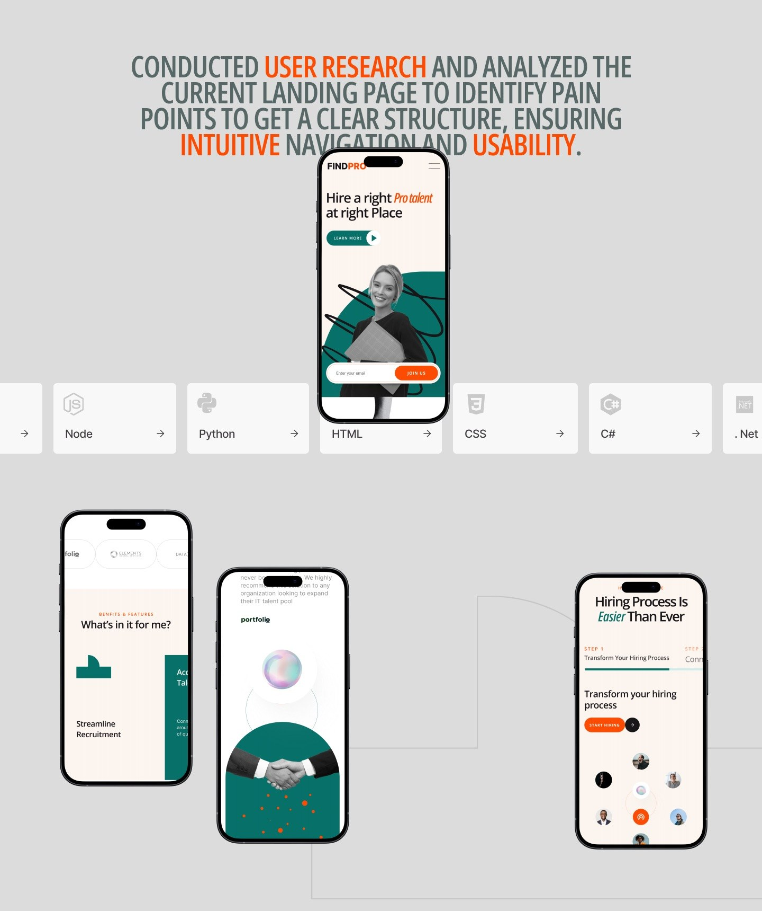
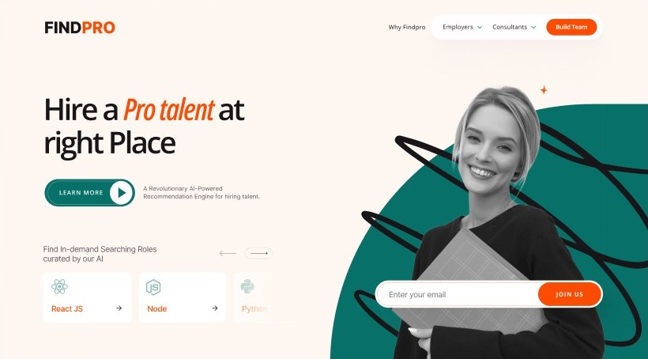
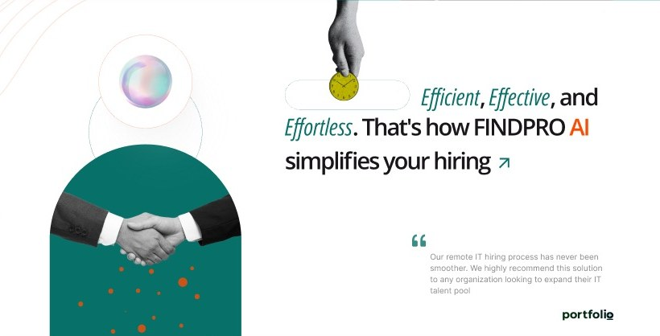
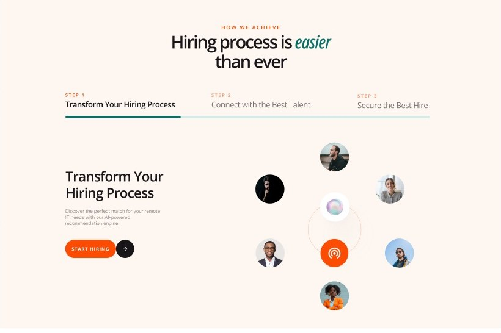
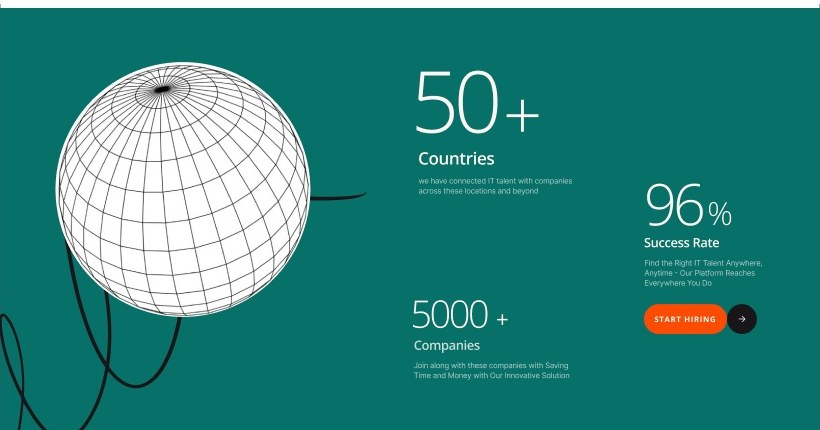
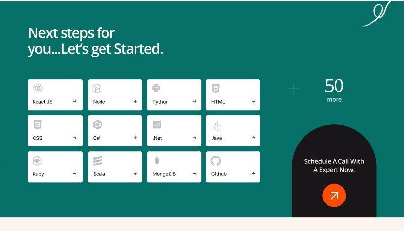
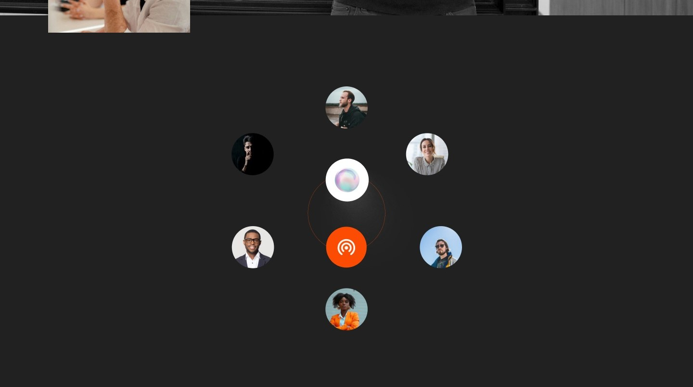
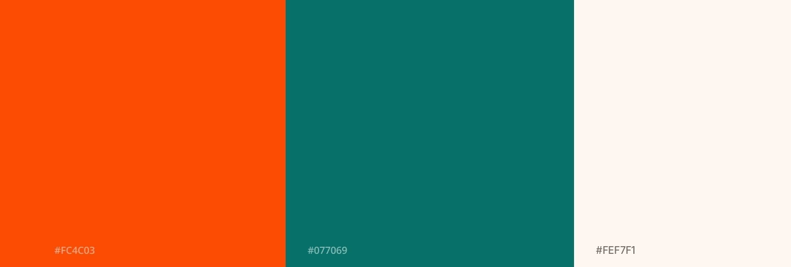
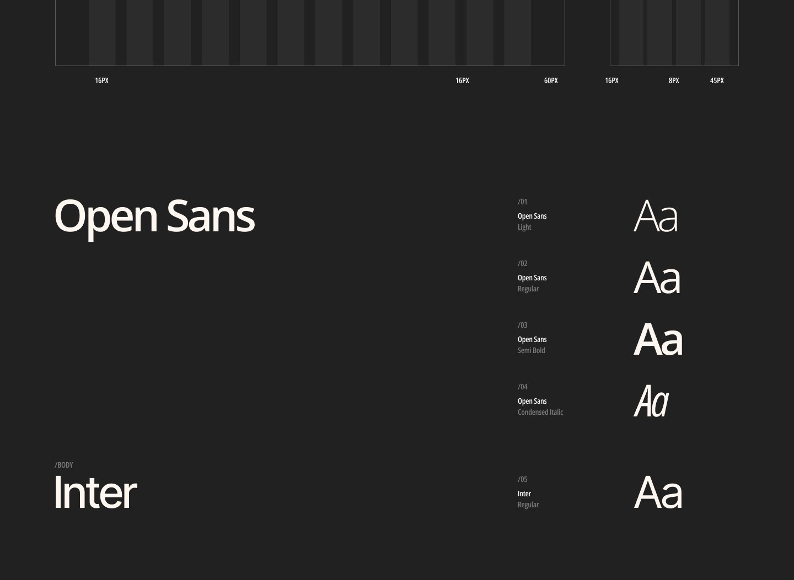
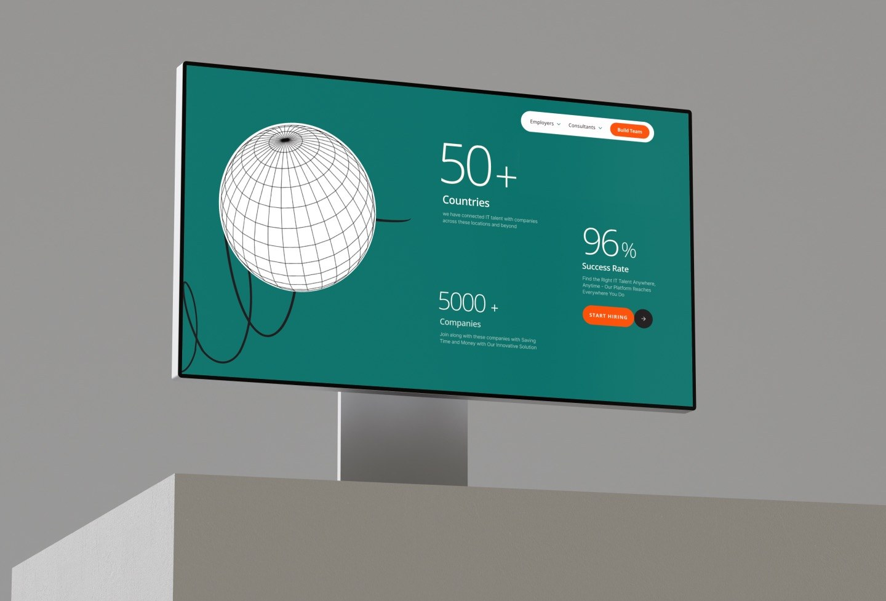

The old page had no clear path from first look to hiring.
FindPRO.ai · 2023 · Landing page redesign
FindPRO.
An AI hiring platform’s landing page, redesigned so employers see the right talent, and the AI behind it, in seconds.
- Role
- Product designer, UI/UX consultant
- Timeline
- Jul – Oct 2023
- Type
- Web · landing page · redesign
- Users
- Employers hiring remote IT talent

01 · Problem
Great AI, buried page.
Goals: simplify navigation, improve usability, highlight the AI with clear calls to action, and keep the brand consistent.
The recommendation engine, the product’s edge, barely showed.
Employers and jobseekers had no obvious next step.
02 · How I found it
I started with the page people left.
- AuditThe current landing page
Mapped every section and where it lost people.
- ListenUser research
Pain points from employers and jobseekers. Add who and how many.
- StructureA clear story
Hero, how it works in three steps, proof, features, next step.
- TestPrototype testing
Checked the new structure and calls to action before handoff.
03 · Research evidence
What we heard, and what it changed.
- MethodUser researchAdd who you spoke toWhat we heard
Add a quote about the old page.
What changedA clear structure: one story from “who you can hire” to “start hiring”.
- MethodPrototype testsAdd rounds and participantsWhat we heard
Add what people struggled with.
What changedAdd what you changed.
- MethodSearch signalsWhat employers search forWhat we heard
Employers look for a skill first: React, Node, Python.
What changedSkill cards sit in the hero, one tap from matching talent.
04 · Mobile first
Hire a pro, from your phone.

05 · Key sections
One story, top to bottom.





06 · Interaction
Motion that guides.
Subtle animations give instant feedback and point people to the next action. Talent orbits the AI as it matches, so the engine is something you see, not something you read about.
- Feedback. Buttons and cards respond on hover and tap.
- Guidance. Motion leads the eye to the call to action.
- Meaning. The orbit shows the AI matching people.

07 · Design language
Bold orange, calm teal.


08 · Decisions
What I chose, and what it cost.
- Lead with skills, not slogans.
The hero opens on in-demand roles, so employers start where they search.Trade-off: add what this cost.
- Show the AI as a process.
Three steps make the matching engine easy to understand and trust.Trade-off: less room for feature lists.
- Put proof before features.
Countries, companies and success rate come before the pitch.Trade-off: add what this cost.
09 · Outcome
A page that points somewhere.

Result.Add a result: conversion, sign-ups, time on page or feedback.
Shipped.Add whether it went live, and when.
Next.Add what you would test next.
10 · Reflection
What I’d do again, and not.
What didn’t work
- Add one thing that did not work.
What I’d do differently
- E.g. set up analytics before launch, so the redesign has a measurable baseline.
- Add your own.